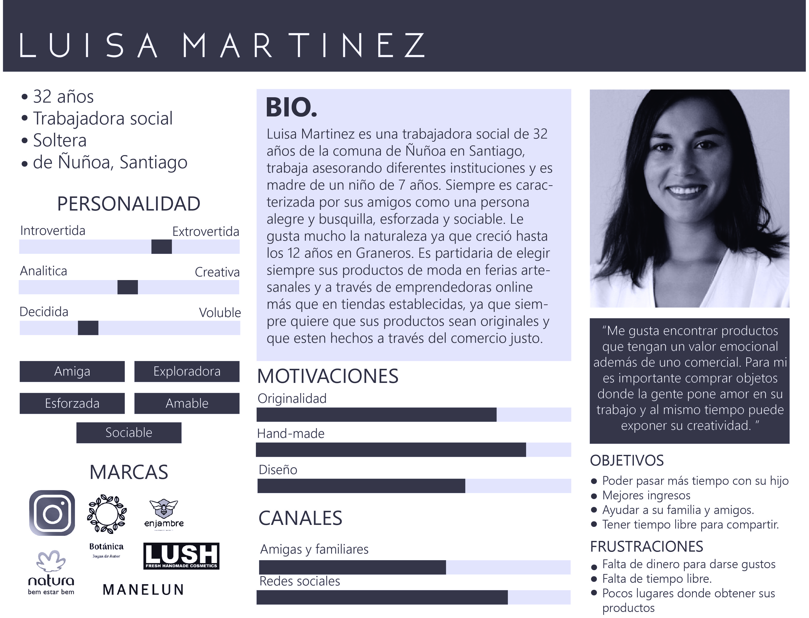
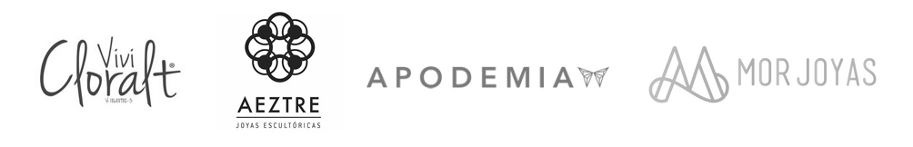

Cumplo
Sitio web de prospección laboral
Estudio de caso
Marco general del proyecto
La transformación digital al sector financiero ha tomado una importante relevancia dentro de los últimos años en el mundo y también ha logrado trascender las fronteras a América Latina. Para ser más específicos en Chile, hemos logrado posicionarnos y lograr competir con el resto de países de la región en la innovación y transformación de los servicios financieros.
Sobre la empresa
Cumplo es una empresa de Crowdfunding y Lending que se dedica a ser un representante e intermediario de las pymes con inversionistas para que estas puedan conseguir créditos con diferentes propósitos. Está enfocada en ser una red y vitrina de posibilidades de inversión donde se regula el exceso de gastos para las pymes a través de inversionistas independientes con una tasa justa.
"Entregarles a los usuarios una herramienta que sea accesible y les permita facilitar su proceso de inversión"
Formé parte del equipo de ejecución del proyecto, involucrándome en las etapas de investigación, síntesis de información, ideación y prototipado
"Entregarles a los usuarios una herramienta que sea accesible y les permita facilitar su proceso de inversión"
Proceso de diseño

Definiendo y entendiendo al usuario
A partir de entrevistas realizadas a diversas clientas de la tienda y al mismo tiempo de posibles futuras clientas hemos podido recopilar sus perfiles en una persona figurativa que se representaría de la siguiente manera:
Principales aprendizajes extraídos del estudio de usuario
- 1.- Les llama mucho la atención a las usuarias la propuesta de valor ligada a la flora y fauna autóctona chilena.
- 2.- Los pocos lugares que puedan existir para adquirir joyas de este tipo tienen en su mayoría un sistema de adquisición web si es que son emprendimientos más formales. De lo contrario estos productos solo se adquieren en ferias ocasionales de artesanía.
- 3.- La información expuesta en redes sociales no satisface sus necesidades, por ende no se motivan tanto a comprar ya que para realizar cualquier consulta el medio de comunicación es bastante engorroso.
- 4.- A las usuarias les parece atractivo el hecho de que exponga sus trabajo ya que les da indicios de lo que es capaz de hacer y posibilidades de personalización.
Estudio del mercado actual
Junto con el estudio de usuario se realizó también un Benchmark que nos ayudó a comprender mejor como funcionaban otros emprendimientos detro del marco de la joyería y al mismo tiempo darnos cuenta como ellos solucinaban problemas que Botánica joyas estaba enfrentando.

- 1.- Poseen más de una red para vender sus productos todos los emprendimientos evaluados.
- 2.- Son muy consistentes con la información que colocan sobre sus productos para que el usuario la pueda tener a su alcance al momento de comprar algún producto.
- 3.- La gran mayoría muestra catálogo de sus productos.
- 4.- Casi todas han establecido un sistema de pago y envío de productos.